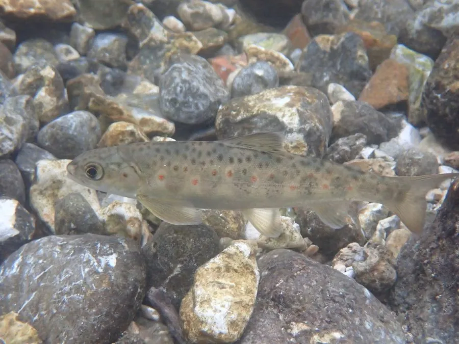

鱼类 · 动物界
大西洋鲑 Salmo salar

在淡水孵化、洄游大西洋生长、再逆流返回出生地繁殖的鲑鱼，是养殖三文鱼的主要物种，肉呈橙红色。
- 分类
- 门脊索动物门纲硬骨鱼纲目鲑形目科鲑科属鲑属
- 栖息环境
- 淡水河流的上游产卵，幼鱼在溪流中成长，成鱼在北大西洋海域育肥
- 地理分布
- 北大西洋两岸，包括北美东岸、冰岛、英国、北欧和俄罗斯西北部，全球多地引种养殖
- 保护级别
- IUCN 无危（LC，全球评估）；中国未列入国家重点保护野生动物名录（无自然分布）
物种志
大西洋鲑体呈纺锤形，背部蓝灰或银蓝色，腹部银白，体侧散布黑色小点；繁殖期的雄鱼下颌延长成钩状，体侧出现红褐色斑纹，这被称为婚姻色。成鱼体长一般 60–90 cm，体重 3–9 kg，最大的个体可超过 1.3 m、体重 20 kg 以上。
大西洋鲑是典型的溯河洄游鱼类：它们在淡水河流上游的砂砾河床中产卵，幼鱼在淡水中生活 1–3 年，变态为降海型后进入北大西洋，在格陵兰周边海域育肥 1–4 年，成熟后凭嗅觉记忆返回出生的河流，逆流而上回到产卵地。它肉食性，幼鱼吃水生昆虫，成鱼在海中捕食小鱼、虾和乌贼；秋季在河床挖坑产卵，产卵后多数亲鱼力竭而死，少数能再次回到海中。大西洋鲑原产北大西洋两岸，如今在挪威、智利等国被大规模养殖，是全球最重要的养殖鲑鱼。全球评估中 IUCN 将其评为无危，中国没有自然分布，也未将其列入国家重点保护野生动物名录。
形态与习性
- 食性幼鱼吃水生昆虫，成鱼在海洋中捕食小鱼、虾和乌贼
- 体长一般 60–90 cm，最大可超过 1.3 m
- 体重常见 3–9 kg，最大可超过 20 kg
- 洄游在淡水孵化，入海育肥 1–4 年后返回出生河流产卵
- 繁殖秋季在河床砂砾中挖坑产卵，产卵后多数亲鱼死亡
- 寿命约 5–10 年
趣味知识
- 大西洋鲑能凭嗅觉记忆找到自己出生的那条河，甚至同一段浅滩。
- 产卵期的雄鱼下颌会变成钩状，体色发红，这是典型的婚姻色。
- 它的肉呈橙红色，颜色来自虾蟹等食物中的虾青素，野生个体通常更鲜红。